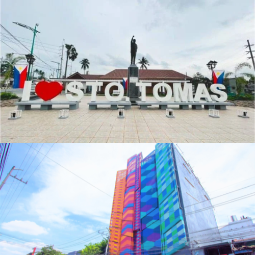

Who am I?
I'm just the average student studying for the next quiz. But in all seriousness, I was born on July 5, 2005 in Olongapo City, Zambales. I currently live in Sto. Tomas City, Batangas, and I'm a first-year college student at CIIT College of Arts and Technology, taking up BS in Entertainment and Multimedia Computing. I'm the youngest in my family, with two siblings.
My goal is to become a professional game developer — to create a game that could change the industry, become successful, and be well respected by the gaming community as a genuinely cool dude.
Hobbies & Interests
My hobbies include playing video games, watching anime, drawing, and playing badminton. I'm interested in how tech works and want to learn more about it, and I'm not afraid to try something new. I love art and I'm currently practicing both digital and traditional drawing, alongside getting to know different programming languages.
I'm single, and I like spending quality time with people. I can also always lend a hand if you're feeling down.